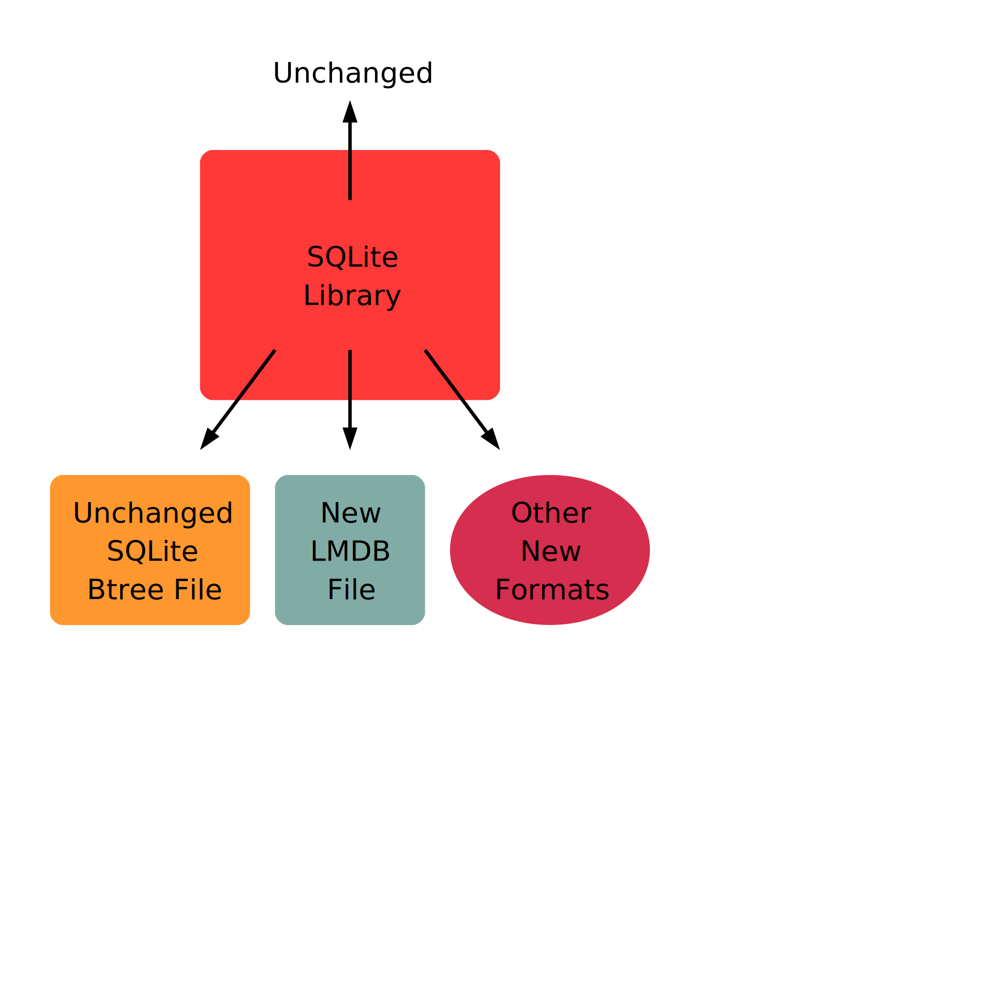

Table of Contents
How LumoSQL Architecture Differs from SQLite

Database Storage Systems
LumoSQL explores several features that are in advance of every other widely-used database. With the first prototype complete with an LMDB backend, LumoSQL is already the first major SQL database to offer an alternative to batch processing, since it has a backend that does not use Write-Ahead Logs. LumoSQL also needs to be able to use both the original SQLite and additional storage mechanisms, and any or all of these storage backends at once. Not all future storage will be on local disk, or btree key-values.
Write-ahead Logging in Transactional Databases has been the only way since the 1990s that atomicity and durability are provided in databases. A version of same technique is used in filesystems, where is is called journalling. Write-ahead Logging (WAL) is a method of making sure that all modifications to a file are first written to a separate log, and then they are merged (or updated) into a master file in a later step. If this update operation is aborted or interrupted, the log has enough information to undo the updates and reset the database to the state before the update began. Implementations need to solve the problem of WAL files growing without bound, which means some kind of whole-database snapshot or checkpoint is required.
WALs seek to address issues with concurrent transactions, and reliability in the face of crashes or errors. There are decades of theory around how to implement WAL, and it is a significant part of any University course in database internals. As well as somewhat-reliable commit and rollback, it is the WAL that lets all the main databases in use offer online backup features, and point-in-time recovery. Every WAL feature and benefit comes down to being able to have a stream of atomic operations that can be replayed forwards or backwards.
WAL is inherently batch-oriented. The more a WAL-based database tries to be to real time, the more expensive it is to keep all WAL functionality working.
The WAL implementation in the most common networked databases is comprehensive and usually kept as a rarely-seen technical feature. Postgresql is an exception, going out of its way to inform administrators how the WAL system works and what can be done with access to the log files.
All the most common networked databases describe their WAL implementation and most offer some degree of control over it:
Companies have invested billions of Euros into these codebases, with stability and reliability as their first goal. And yet even with all the runtime advantages of huge resources and stable datacentre environments - even these companies can't make WALs fully deliver on reliability.
These issues are well-described in the case of Postgresql. Postgresql has an easier task than SQLite in the sense it is not intended for unpredictable embedded use cases, and also that Postgresql has a large amount of code dedicated to safe WAL handling. Even so, Postgresql still requires its users to make compromises regarding reliability. For example this WAL mitigation article describes a few of the tradeoffs of merge frequency vs reliability in the case of a crash. This is a very real problem for every traditional database and that includes SQLite - which does not have a fraction of the WAL-handling code of the large databases, and which is frequently deployed in embedded use cases where crashes and resets happen very frequently.
WALs in SQLite
SQLite WALs are special.
The SQLite WAL requires multiple files to be maintained in synch, otherwise there will be corruption. Unlike the other databases listed here, SQLite has no pre-emptive corruption detection and only fairly basic on-demand detection.
Single-level Store
Single-level store concepts are well-explained in Howard Chu's 2013 MDB Paper:
One fundamental concept behind the MDB approach is known as "Single-Level Store". The basic idea is to treat all of computer memory as a single address space. Pages of storage may reside in primary storage (RAM) or in secondary storage (disk) but the actual location is unimportant to the application. If a referenced page is currently in primary storage the application can use it immediately, if not a page fault occurs and the operating system brings the page into primary storage. The concept was introduced in 1964 in the Multics operating system but was generally abandoned by the early 1990s as data volumes surpassed the capacity of 32 bit address spaces. (We last knew of it in the Apollo DOMAIN operating system, though many other Multics-influenced designs carried it on.) With the ubiquity of 64 bit processors today this concept can again be put to good use. (Given a virtual address space limit of 63 bits that puts the upper bound of database size at 8 exabytes. Commonly available processors today only implement 48 bit address spaces, limiting us to 47 bits or 128 terabytes.) Another operating system requirement for this approach to be viable is a Unified BufferCache. While most POSIX-based operating systems have supported an mmap() system call for many years, their initial implementations kept memory managed by the VM subsystem separate from memory managed by the filesystem cache. This was not only wasteful (again, keeping data cached in two places at once) but also led to coherency problems - data modified through a memory map was not visible using filesystem read() calls, or data modified through a filesystem write() was not visible in the memory map. Most modern operating systems now have filesystem and VM paging unified, so this should not be a concern in most deployments.